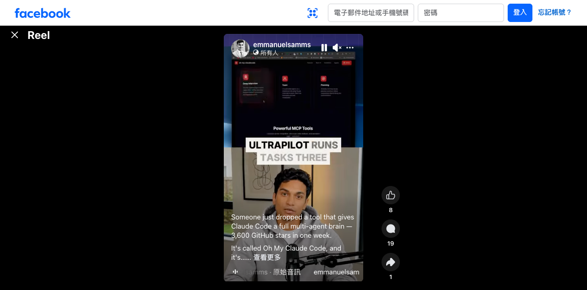

emmanuelsamms｜Oh My Claude Code：Claude Code 多代理大腦與星數查核落差

為什麼保存
這則 Reel 值得保存，因為它反映 coding agent 社群正在把 Claude Code 往「多代理協作、MCP 工具組、規劃/訪談/團隊模式」包裝。即使貼文中的 GitHub 星數目前無法查核，它仍是一個重要訊號：Claude Code 週邊工具開始以「把單一 coding agent 變成 agent team」作為主賣點。
Facebook 可見內容
原始分享連結導向 canonical：`https://www.facebook.com/reel/3145634182292149`。未登入狀態下可見資訊如下：
- 作者：emmanuelsamms。
- 文案可見片段：「Someone just dropped a tool that gives Claude Code a full multi-agent brain — 3,600 GitHub stars in one week. It's called Oh My Claude Code...」。
- 音訊：emmanuelsamms · 原始音訊。
- 可見互動：8 個讚、19 則留言、1 次分享。
- 影片畫面：深色產品介面，上方可見「Powerful MCP Tools」；功能卡片包含「Deep Interview」「Team」「Planning」。畫面大字可見「ULTRAPILOT RUNS」「TASKS THREE」等片段，字幕則直接提到 Oh My Claude Code。
可拆解的產品主張
依可見畫面，這類工具主張大致包含：
- 讓 Claude Code 不只是一個 coding assistant，而能拆成多個角色或子代理。
- 用 MCP 工具把外部能力接入 Claude Code，例如訪談、規劃、團隊協作、任務分派。
- 把 coding workflow 從「單線對話」改成「主代理規劃、子代理執行、結果回收」。
- 用「multi-agent brain」這種語言包裝，提高社群傳播力。
官方查核：Claude Code subagents / MCP 是真能力
Anthropic Claude Code 官方文件〈Create custom subagents〉確認：Claude Code 支援建立 task-specific subagents，用於特定工作流程與改善 context management。
Anthropic Claude Code 官方文件〈Connect Claude Code to tools via MCP〉確認：Claude Code 可透過 Model Context Protocol 連接外部工具。
也就是說，「Claude Code + subagents + MCP」這個大方向是真的；但特定第三方工具 Oh My Claude Code 的成熟度、安裝安全性、星數與維護狀態需要另外查核。
GitHub 星數查核落差
本次用 GitHub repository search 與 GitHub API 查核「Oh My Claude Code」「oh-my-claude-code」「Ultrapilot」等關鍵字，未找到與貼文聲稱「一週 3,600 stars」相符的主 repo。
可查到的相近 repo 包含：
- `zephyrpersonal/oh-my-claude-code`：0 stars；描述為 Multi-agent orchestration with Ultrawork mode for Claude Code。
- `477174/oh-my-claude-code`：0 stars；描述為 Multi-agent orchestration system for Claude Code；MIT license。
- `SleepyLGod/oh-my-claude-code`：2 stars；描述為 modified Claude Code CLI。
- `vyvhouse/oh-my-destructor`：29 stars；描述為 Safe uninstaller for Oh My Claude Code。
- `huangdijia/oh-my-claude-code-plugins`：10 stars；描述為 Claude Plugin Marketplace。
因此本文只把「3,600 GitHub stars in one week」保存為社群貼文聲稱，不當成已驗證事實。若之後找到正確 repo 或原作者發布頁，應補上 canonical GitHub 連結與實際 stars。
對欒帥的可用改寫
- 課程案例：可接在 Codex / Claude Code subagents 教學後，討論「agent team」如何被產品化包裝。
- 工具評估：先看官方 subagents / MCP，再評估第三方套件是否只是 prompt/設定檔集合、CLI wrapper，或真的有安全邊界與任務管理。
- 安全提醒：凡是會改 Claude Code CLI、安裝 plugin、接 MCP server 的工具，都要檢查權限、shell script、postinstall、token 存取與 repo 維護者可信度。
- 社群查核示範：這則適合用來教「高 star 數、爆紅、multi-agent brain」等行銷語如何做二次查核。
風險與限制
- Facebook 未登入狀態無法取得完整影片、連結與留言；本文依可見畫面、文案片段與 GitHub/API 查核整理。
- 沒找到與 3,600 stars 相符的官方 repo；星數與爆紅敘述不可直接引用為事實。
- 第三方 Claude Code 工具可能要求安裝 shell script、MCP server、plugin 或修改本機設定；導入前應在隔離環境檢查程式碼與權限。
- multi-agent 不等於品質提升；沒有任務邊界、測試與審查機制時，多代理只會放大錯誤與成本。
來源
- Facebook Reel：<https://www.facebook.com/reel/3145634182292149>
- Anthropic Claude Code subagents：<https://docs.anthropic.com/en/docs/claude-code/sub-agents>
- Anthropic Claude Code MCP：<https://docs.anthropic.com/en/docs/claude-code/mcp>
- GitHub candidate：<https://github.com/zephyrpersonal/oh-my-claude-code>
- GitHub candidate：<https://github.com/477174/oh-my-claude-code>
- GitHub candidate：<https://github.com/SleepyLGod/oh-my-claude-code>